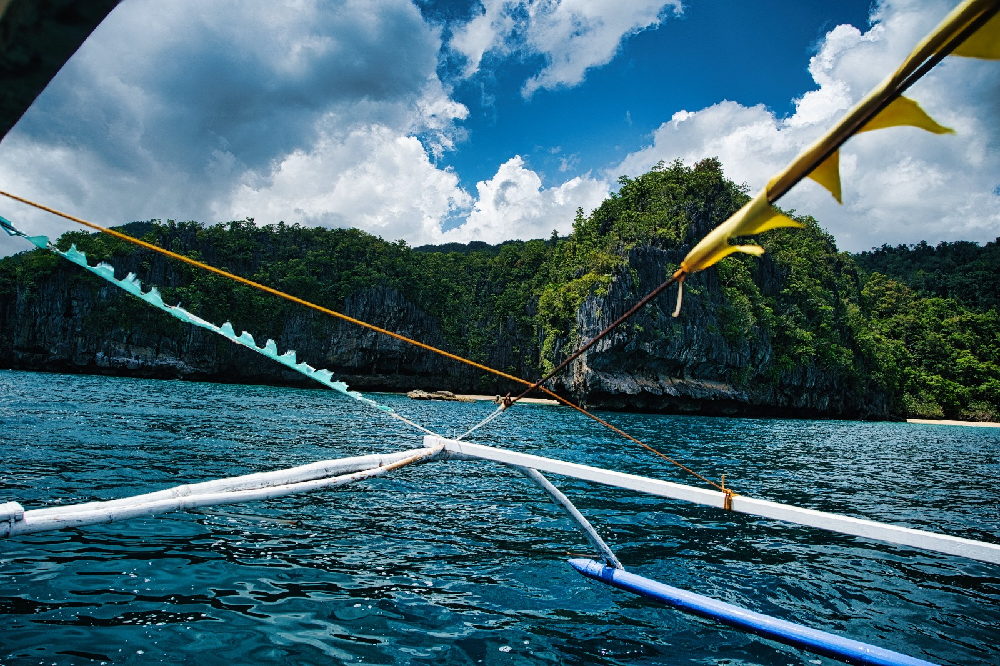

Pourquoi ce projet
Un rêve né sur l'eau
On est volontaires aux Philippines pour 2 ans. Entre deux missions, on a passé du temps sur des bancas pour pêcher — ces bateaux en bois colorés, avec leurs balanciers et leur petit œil peint à la proue.
Un jour on s'est dit en rigolant : et si on en achetait une ! Puis au fur et à mesure le projet à muri et à commencer à prendre sens quand nous avons découvert le camp de la fondation à Mulanay. Le lieu parfait pour commencer ce projet.
